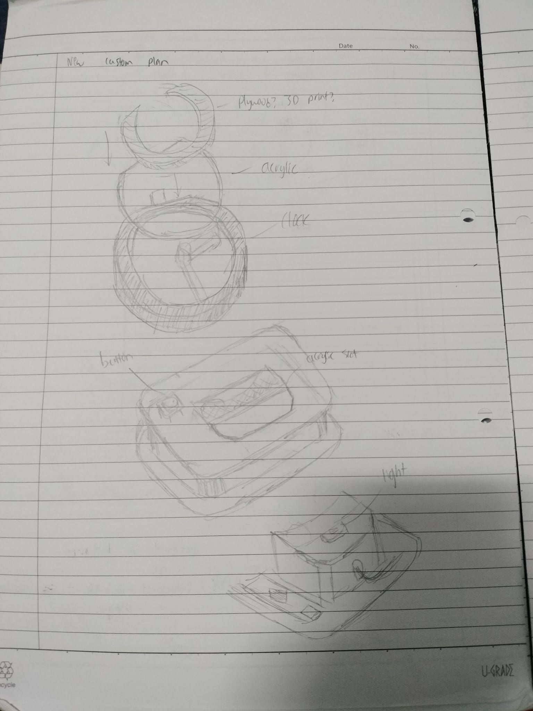

Final Project
- So we've come close to the end of the module. For our final task, we are supposed to start a project and make something using the skills we have gathered thus far, and document the journey in this site. Without further ado, we shall see how I've managed to complete this project.
Coming up with the idea (Ideation)
- First off, we need an idea of what we want to and are going to make. The criterion is straightforward; the project must include things made with what you have learned throughout your time in the module, which are Laser Cutting, 3D Printing and Embedded Programming. But the question is, how are we going to include all this into one package?
- So I started coming up with draft ideas. The criterion also included the fact that the project must have some forms of input and output devices, in which there are a variety of. I listed down what was available, including different types of sensors, switches, lights etc. I then decided on which ones to use, mainly lights and some input devices, like sensors and switches.
- Once I looked through what had to be used, I started to think of what I wanted to make. I wanted something practical that I can use, or at least be an interactive display piece I find pleasing. One idea that popped into my head at the time was making a Gundam bust statue (a miniature one, of course) since I was watching a series at the time. However, I quickly scrapped the idea after trying to model the head of the bust, as it was too difficult for my skill level. Other ideas included more display pieces but none of them seemed particularly "unique(?)" or "impressive". Some of them also did not fulfil the criteria either.
- So after scouring the internet for ideas, I stumbled upon a hollow clock designed by Shiura, a talented designer from Japan who creates all manners of clocks using DFAB techniques. What was surprising was, he kindly uploaded instructions and the necessary files required to replicate his project.
- Now, I couldn't just rip off his hard work and pass it off as my own, that'd be plagiarism. So, I need to put my own touches to it to make it uniquely mine (I hope). But now, we have decided on what we are going to make, which is the hollow clock! (spoilers, I wasn't the only one who made the same clock, go figure)
The Customization Plan
- Now that I've decided on what to make, I now need to customize it and make it unique, add my own touches, if you will. The clock basis by itself already covers the 3D Printing and embedded programming aspect of the project already, so that technically meant that all I had to do was fulfil the Laser Cutting aspect somehow. Don't worry, I also added my own touches to the other two aspects.
- The main idea for Laser Cutting I decided to go for was simple, one that I've done before in a previous assignment. Design and cut out a box, and that box will house the base of the hollow clock. Simple and effective. I also had another idea, which I will cover next.
- Now, I could've just cut plywood for the box, but I also thought of the other material that I can cut, that being acrylic. That being said, I expanded on that idea. Since acrylic is clear, I thought of using it in tandem with lights to act like a lamp, an acrylic lamp, basically.
- So now the general idea is to merge an acrylic lamp with the clock. Simple and practical.
- Before I can customize the clock, I need to have it to understand how it works. So, using the files that were available, I printed the components of the clock one by one, over the course of a few sessions. Then, I assembled it for the first time to examine how it all works.
- The basic premise as to how the clock works is that the arms are driven by two large gears, which are housed in a frame. To move the arms, you move the gears, which are controlled in the base of the box, which is basically a gearbox containing the motor, electronics and the driver gears.
- The original idea was to wedge the acrylic panel in between the gears, then channel the light right through the acrylic. However, that cannot be done, since the gears have to be together in order for the clock to function. So we need to figure out an alternative to this since we cannot interfere with the gears.
- The solution is somewhat simple, if the panel can't be inside, then mount it outside. I decided that I'm going to put it on the back of the clock. The light will then be mounted in the gearbox.
Printing the base clock
- So for the very first part of the project, I needed to print out the clock using the files that were graciously provided by Shiura. Due to the number and sizes of the parts, I had to print them all over a couple of sessions.
- Once done, I did the first assembly of the clock, following the instructions to properly build up the clock.
- Since the clock called for rather specific parts, such as M2 screws and neodymium magnets, I couldn't do a "proper" test with the functions since I didn't have them on hand at the moment, but the gears could move smoothly and that's what matters.
- The basic assembly for the clock is done.
Designing and cutting the box base
- This is the part where I had to design the new base of the clock. For this, we shall once again be using Fusion 360.
- For the new base of the clock, I wanted something that was still somewhat small so it did not overshadow the clock, so I made some drafts and decided on some dimensions that was suitable for my tastes.
- After spending some time modelling, I modelled out the general shape of the box, as well as its features, such as the slots. I had originally considered using living hinges for the rounded corners, but down the line I encountered some issues with it after cutting, so the idea had to be scrapped.
- After the model was complete, I used the Arrange function to lay out the parts flat, then projected the models to obtain the sketch I will use for the cutting, in the form of a DXF file. I also decided to do a little laser engraving, and I decided to engrave my logo, which I had saved as an SVG file prior.
- Time for the cutting. When I showed up at T11, I found out that the minimum thickness of the plywood that was provided was 3mm and up, and I had foolishly modelled everything with a 2mm thickness. I tried adjusting the thickness with the User Parameters, but that ended up not working. So I had no choice but to cut as is, with the slots at 2mm thickness. I ended up having to file down the slots and finger joints in order for them to fit properly.
- So now we have the box ready for use! Unfortunately, as stated above, the living hinges did not work. In fact, the first one I cut immediately snapped when I tried to bend it slightly. This was due to the thickness of the wood that was used, the radius of the curve as well as the gaps between the slats. I even tried cutting a second one but to no avail, with the piece snapping as well. Overall, the hinges did not turn out well and I had to come up with another solution to improvise.
The miscallaneous bits
- In addition to the box and clock, I decided to make some components that would aid in the design.
- The first one was an Arduino Nano holder / mount. Due to the strange layout of the Arduino pins, I had to find a way for it to be mounted in the box without moving. So, taking some inspiration online, I measured out some dimensions of the board and designed a simple mount on Fusion, then printed it out. I had to do some minor filing and even cut off one side for fitting, but overall it worked like a charm.
- The next one was a holder of sorts for the Neopixel. One of the greatest challenges I had to face was the issue of how to mount the Neopixel within the gearbox in that limited amount of space, and not interfere with the gears. I just came up with a simple U-shaped block design, and used it in the gearbox as intended to prop the light up.
- Natually, since my project was about combining an acrylic lamp with the clock, I needed a piece of acrylic in my project. I measured the approximate dimensions of the clock's casing, then sketched out a circle and trimmed it appropriately. Using the sketch, I used it for laser cutting and managed to cut the panel out together with the box in the same session.
- Now, I didn't just want the acrylic panel just exposed at the back. I decided to hide and enclose it with a panel of its own, like an extension of the clock case. I modelled up the cover with Fusion, printed it out and attached it to the acrylic with glue, before attaching it to the back panel of the clock as well.
- As mentioned above, the living hinges did not manage to work, so I had to improvise something. Instead of using living hinges, I decided to turn back to 3D Printing, and using the model of the box I made a model of a corner piece to be sent for 3D printing. Obviously, I printed four corners for the box.
Programming
- This has one goal: to be able to control the motor for the clock as well as control the Neopixel with the button, and for that we need to merge codes, which is the real challenge.
- The codes for the motor were also provided by Shiura, and there were two codes, one test code where the motor runs continuously and the actual clock funtion code, where the clock actually functions like a clock. As for the Neopixel code, I had to source some code, and I managed to find the perfect code on TinkerCAD by a user by the name of Dakcser.
- Simply copying and pasting the codes did not work that simply. The main issue that arose was that the button did not activate the light, but the motor could run. After getting some help, I was told that the delay() function in the light code was causing issues, and was told to change it to a millis() function, which worked!
- Now here is where it splits up. The clock function works perfectly fine with the merge, but the demo code still had some issues. I decided that I'd go with the actual function code anyways.
- Since TinkerCAD does not have a stepper motor to use in the simulation, so I will just put the circuit for the Neopixel here.
Assembly
- Now, it is just a matter of putting everything together. Most of the parts should fit nicely such as the wooden pieces, but some parts required minor gluing.
- The areas that required gluing were the corner pieces, where they had to be glued to the base of the box; the acrylic and its cover, where it had to be attached to the back cover of the clock case. The gearbox and Nano holder were held in place using double sided tape.
- All that is left is the wiring. I had to fit a lot of wires within a small area, and I had to use jumper wires. Unfortunately, most of the wires were quite long, so the challenge was largely wire management and making everything fit nicely. Since I had two devices, the motor and the light, I needed them to share the singular 5V and GRND pins on the Nano. For this, I soldered two wires together, and connected them to one connector wire. I did this for each pin. Apart from those, I also had to solder wire to the button pins. Since wire interference was an issue, I had to wrap the exposed wires with either wire tape or try to use heat shrink wherever possible. I had accidentally fried an Arduino prior because I had accidentally switched the 5V and GRND wires around and had to get it replaced.
- After all that's said and done, I just put everything in the box, tried to neaten the wiring and closed the lid. The first attempt had some issues, but that boiled down to an Arduino fault. After getting a fresh one, it finally worked!